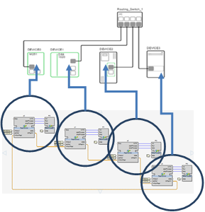
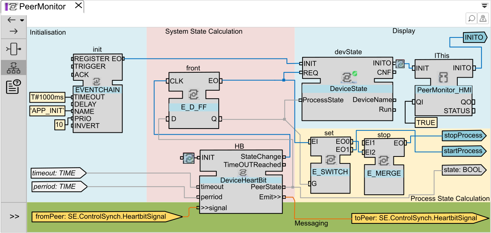
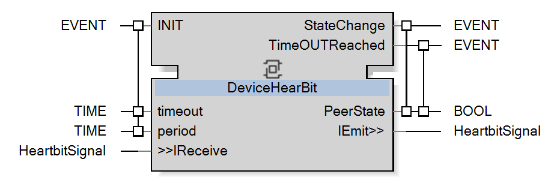
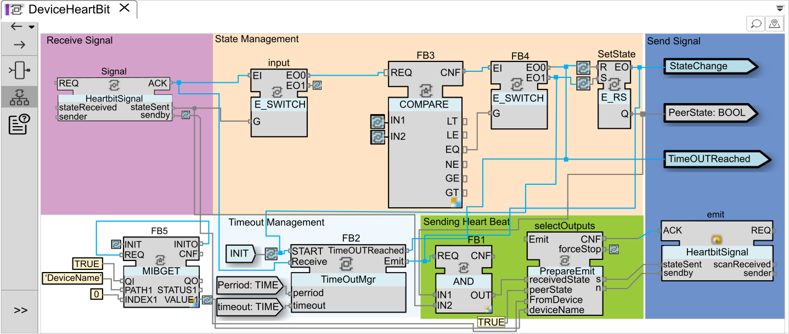

The sections in this topic illustrate how to synchronize the start of all devices based on the overall System state information.
Devices are exchanging information in a loop () through a common interface.

All devices receive:
One PeerMonitor CAT to process the state of the pair.
One FakeProcess CAT to simulate the parts of the process to be synchronized.
The PeerMonitor CAT includes a DeviceState for display purpose and monitors the previous device through a heartbeat mechanism. It gives a Start process event if the system is ready and a stop process event if the system is not ready.
The PeerMonitor logic is split in five zones:
Initialization: which has been triggered through an EVENTCHAIN.
System State Calculation: Heartbeat management which is linked with previous and next device.
Process State Calculation: commands to start or stop the process according to the state.
Messaging: communication and interfaces to connect with previous and next device.
Display: HMI part.

The core of the logic is the system state calculation to detect the availability of the previous device and take into account the overall system status. This logic is provided by DeviceHeartBit composite function block:

As the name suggests, it implements a simple way to exchange periodic “heart beat” events between paired devices. At initialization, the function block receives the period to send the heartbeat signal and a timeout.
The state change event provides a way to signal any change of the system state to be able to handle the process correctly. A timeout control allows detecting the failure on the other side.
The DeviceHeartBit composite logic has the following parts:
Polling, sending heartbeat every period (emit), and starting a timer to detect the non-answer after a timeout (timeoutDetected).
Reaction to the reception of the heartbeat from the partner, stopping the timer before it reaches the timeout, and providing state.
Calculating the data to send to the next device.
